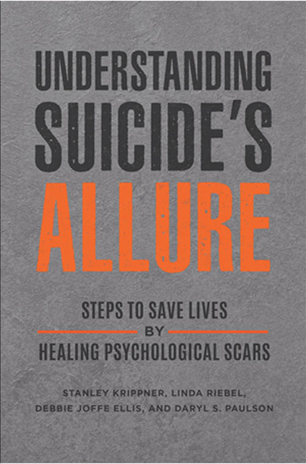

Stanley Krippner's latest book, "Understanding Suicide's Allure: Steps to Save Lives by Healing Psychological Scars" is co-authored with Linda Riebel, Debbie Joffe Ellis and Daryl S. Paulson. It covers broad and deep ground on the topic of suicide prevention - from new scientific research, to sociopolitical insights into at-risk groups, to psychological and philosophical theories such the role of personal mythology.
Several chapters deal with the topic of dreaming. Can dreams and nightmares act as early warning signals for people at risk of suicide? Can therapy involving dreams provide a new avenue of treatment?
Early in the book Krippner cites the work of R.E. Litman and other psychologists, who have worked with many clients with self-reported suicidal thoughts. Their studies found that there are certain themes significantly more likely to appear in the dreams of suicidal clients, even vis-a-vis other clients suffering from depression. These include dreams of feeling trapped and helpless / struggling to escape, revenge, and perhaps naturally dreams of self-dissolution and taking leave from others.
While acting as warning signs, Krippner offers several anecdotes in which dreams have worked against suicidal impulses. He gives the example of a woman who was forced, in her dream, to give the eulogy at the funeral of her childhood best friend. Seeing the pain in everyone in the audience, she awoke and abandoned her plans of taking her own life. This suggests that dreams may play an active role in aiding mental health, rather than simply reflecting it.
A contrast to this though is the book's later discussion of PTSD nightmares. Dreams usually rehearse coping behaviours, defuse the emotional impact of daily events and help create an organised sense of self - creating connections between disparate memories and thoughts, creating new scenarios and opening new avenues of thought, possibility and healing. PTSD nightmares on, the other hand, are different. In PTSD patients these coping, defusing and re-organising aspects of dreams (and even nightmares) appear to break, instead subjecting the dreamer to unfiltered flashbacks.
The book discusses various schools of PTSD nightmare therapy, including Imagery Rehearsal Therapy (IRT), and Exposure, Relaxation and Rescripting Therapy. These methods involve aspects of rescripting and rehearsing new versions of the PTSD dreams, perhaps using lucid dreaming.
Neuroscientist and psychiatrist Bruce Dow, for example, developed “Dream Revision Therapy” while working with Vietnam War veterans. People discuss their nightmares in a group setting, and suggest ‘revisions’ to each other that would make the nightmares less terrifying and more optimistic. The dreamer then chooses a new script, and rehearses it during the day, checking to see if it has a positive effect on nightmares. Anecdotally, positive revisions often become part of the dream.
The book is well structured and includes a good balance of the latest scientific research with historical discussion and deep psychological theories. Each chapter is succinctly argued with concluding takeaway points. Though I'm far from an expert in this topic, I would recommend it to anyone with an interest or a need to read up on the area.